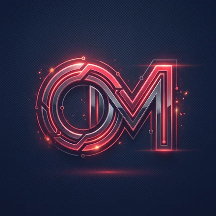

Bonjour, je suis
Omar Talibi
Étudiant passionné par les réseaux, la virtualisation
et la cybersécurité. Futur Administrateur Systèmes & Réseaux.
À propos de moi

Omar Talibi
Étudiant BTS SIO SISR · Nice, France
Passionné par l'informatique, je m'intéresse particulièrement à l'administration système, à la cybersécurité et à la virtualisation (VMware, VirtualBox).
Au fil de ma formation, j'ai acquis de solides compétences en configuration de serveurs, en gestion de réseaux et en sécurisation des systèmes. Mon objectif est de devenir Administrateur Systèmes et Réseaux.
Ma Formation
BTS SIO — Option SISR
IRIS Mediaschool · Nice · 2024 – 2026
- Configuration serveurs (Linux / Windows)
- Réseaux locaux, VLAN, Routage
- Active Directory & GPO
- Supervision et Cybersécurité
IRIS Mediaschool
École spécialisée dans le numérique
- Apprentissage pratique et concret
- Gestion de projet en équipe
- Mise en situation professionnelle
- Insertion professionnelle accompagnée
Mes Outils
Réseaux
Cisco, Routage, VLAN, Wireshark
Systèmes
Debian, Windows Server, AD, VirtualBox
Sécurité
Firewall, UFW, SSH, Fail2ban
Développement
HTML, CSS, JS, Python, Bash
Projets à la une
Trois réalisations représentatives de mon parcours en systèmes et réseaux.
Active Directory IRIS
Domaine AD DS sur Windows Server 2022 pour l'école IRIS Nice : identités centralisées, GPO conformes ANSSI, scripts PowerShell et authentification 802.1X.
Voir le projetSupervision et monitoring
Stack Prometheus, Loki et Grafana, Nextcloud avec authentification AD et reverse proxy Traefik en HTTPS, avec centralisation des logs Cisco.
Voir le projetRéseau multi-sites
Réseau d'un établissement hôtelier de 3 bâtiments : 10 VLAN, routage RIP v2, DHCP par VLAN et sécurisation SSH des routeurs Cisco. Réalisé en stage chez BMA.
Voir le projetTableau de Synthèse
Compétences acquises durant ma formation, validées par des projets concrets.
Tableau de Synthèse (E4)
Document officiel récapitulant l'ensemble des compétences acquises lors de ma formation et de mes projets.
Un stage, une alternance, un projet ?
Écrivez-moi : je réponds rapidement. Mon CV est disponible en un clic.